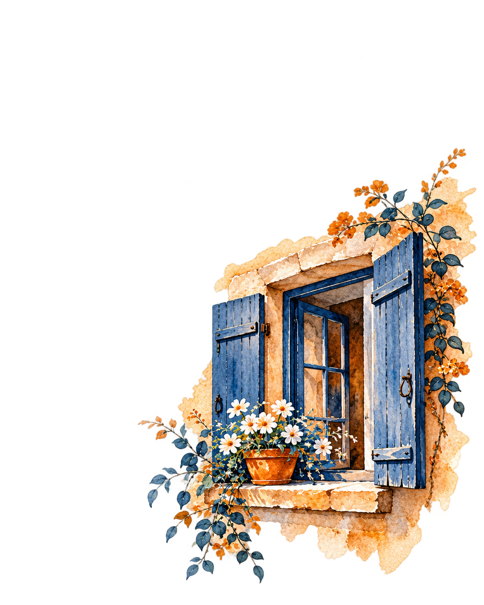

El legado de amor de
Marielitos
Pensamientos y lecciones de vida de su diario.
♥
Para nuestra familia y seres queridos
Mi madre dejó escritas en su diario las huellas de su corazón. Ella nos enseñó que la felicidad no está en tener mucho, sino en agradecerlo todo: desde el canto de un pájaro y el agua fresca de la mañana, hasta una tortilla hecha con cariño.
Nos demostró que el estudio nos hace libres, que a los problemas de la vida se les hace frente con disciplina y bailando en la sala de la casa, y que todas las personas del mundo tienen exactamente el mismo valor.
Para ella, cada persona que formó parte de su vida fue un milagro y su mayor alegría. Cada vez que nos esforcemos, ayudemos a quien lo necesite y sonriamos ante un nuevo día, el espíritu alegre de Marielitos seguirá vivo en todos nosotros.
♥

Pensamiento I
Agradece cada nuevo día
«Abre los ojos dando gracias por estar viva; siente la alegría de existir en el aire que respiras, en el canto de los pájaros, en la lluvia que cae sobre el jardín y hasta en el abrazo del agua fría al bañarte por la mañana».
♥

Pensamiento II
Recuerda que todos valemos igual
«Nunca te sientas más que nadie: recuerda siempre que estamos hechos del mismo polvo y que la vida de cualquier persona tiene el mismo valor que la tuya».
♥

Pensamiento III
Comparte tu pan con quien tiene hambre
«Nunca niegues un plato de comida o un vaso de fresco a quien lo pida. Entrégalo con ternura, pues no existe una paz más hermosa al final del día que acostarse con la satisfacción de haber calmado el hambre de alguien más».
♥

Pensamiento IV
No te encierres en cuatro paredes
«No te encierres en paredes: mira a tu alrededor, saluda a tus vecinos, preocúpate por tus compañeros y tiende la mano a quien vive en soledad».
♥

Pensamiento V
Trata con cariño a los abuelitos
«Regala siempre una sonrisa, un dulce y una caricia a los ancianos; en el brillo de su mirada agradecida encontrarás las bendiciones más lindas para tu corazón».
♥
Pensamiento VI
Pon el estudio en primer lugar
«Para ti lo primero debe ser siempre el estudio; aunque cueste y toque aprender con libros prestados, esfuérzate por prepararte y no cambies tu futuro por un rato de paseo».
♥

Pensamiento VII
Acepta las pruebas con valor y sin quejarte
«Cuando la vida te ponga una prueba difícil, acéptala con valor y nada de protestar. Cuídate mucho, no pases pensando en tus males y, si no puedes salir a caminar, pon música o baila en la sala de tu casa».
♥

Pensamiento VIII
Sé feliz con las cosas sencillas
«No necesitas lujos para ser feliz: aprende a encontrar la belleza en las cosas sencillas de la vida, en un vestidito humilde hecho en casa y en el sabor de una tortilla palmeada por unas manos cariñosas».
♥
Pensamiento IX
Disfruta y cuida mucho a tu familia
«Comparte siempre con tu familia en las alegrías y en los fracasos; aunque al final del día termines cansada, cocina con gusto, celebra cada cumpleaños y ayuda con paciencia, porque tenerlos cerca es el milagro más grande».
♥
«Haz de tu vida algo tan hermoso que algún día puedas decir: 'me siento realizada al recordar mi vida'. Y siempre dale las gracias al Padre Celestial por cada momento de dicha».
♥
Marielitos
María de los Ángeles Guzmán Núñez